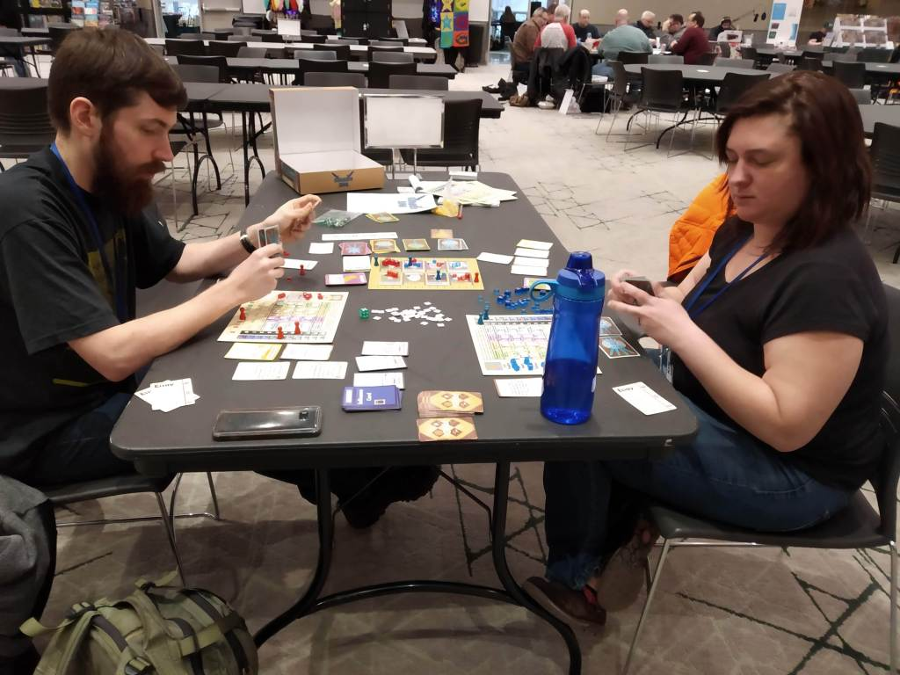
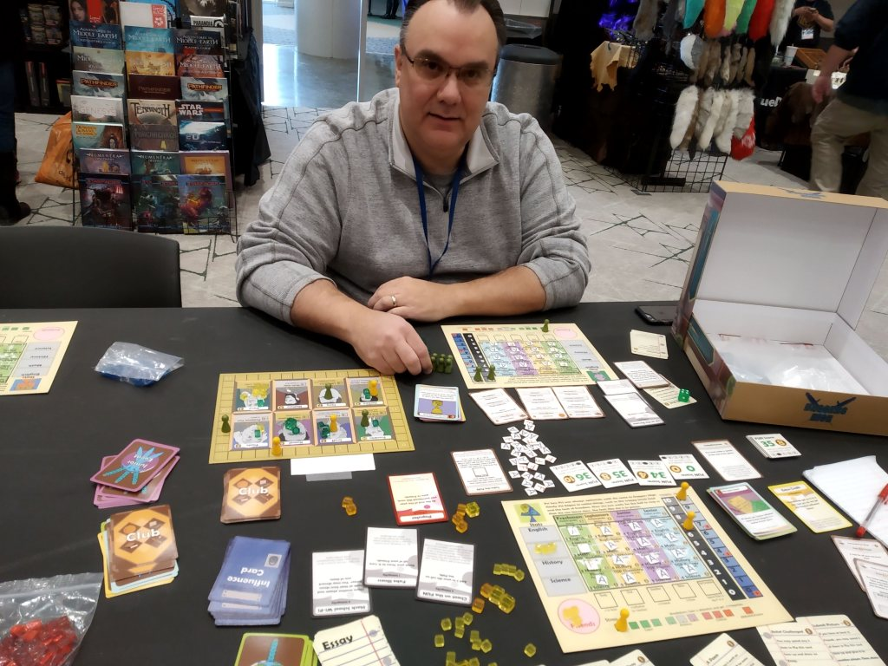
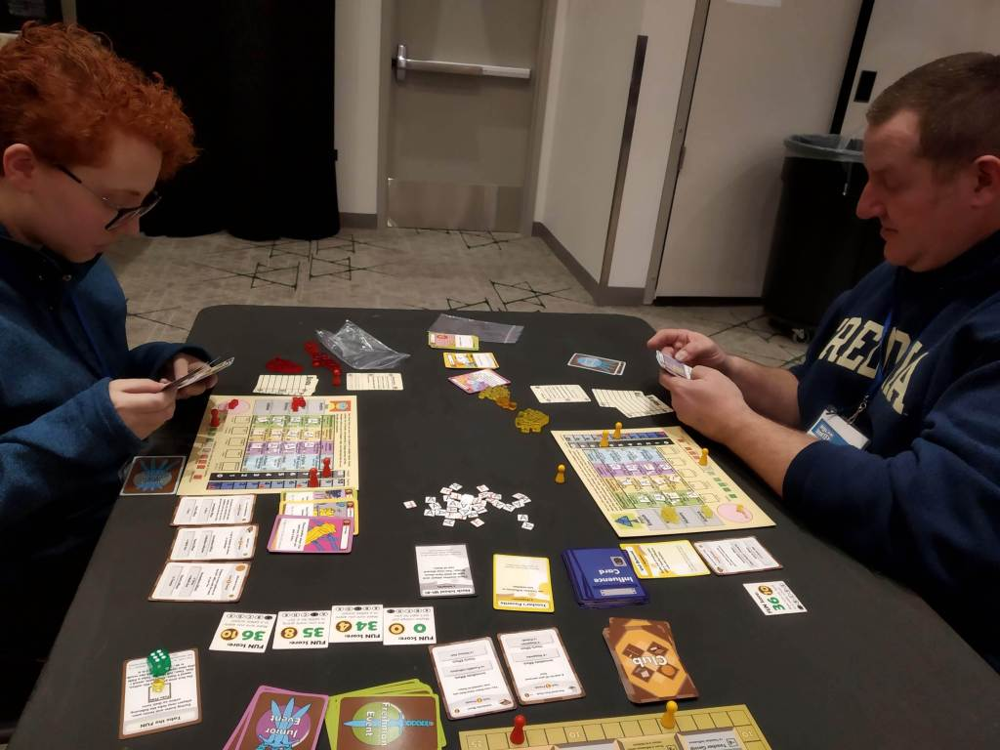
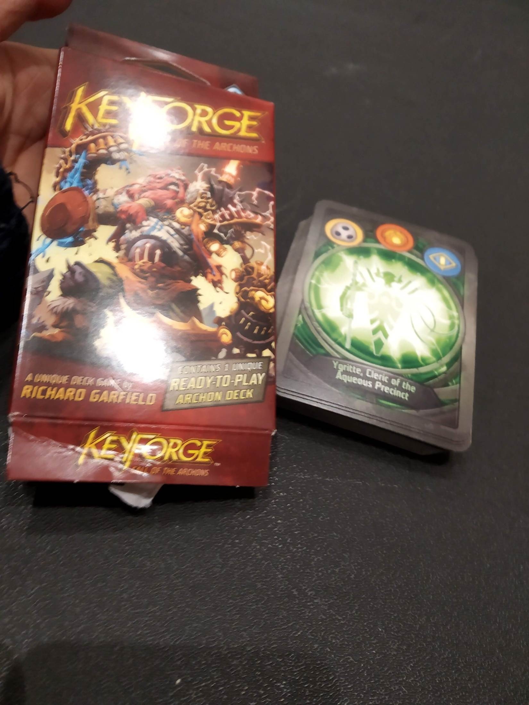
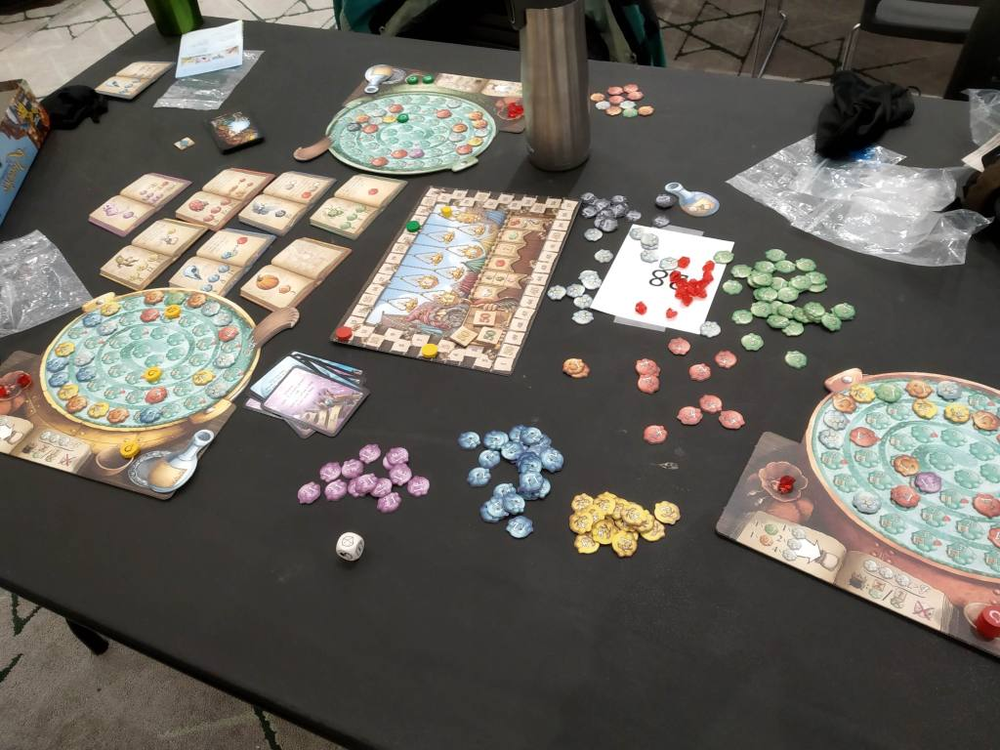
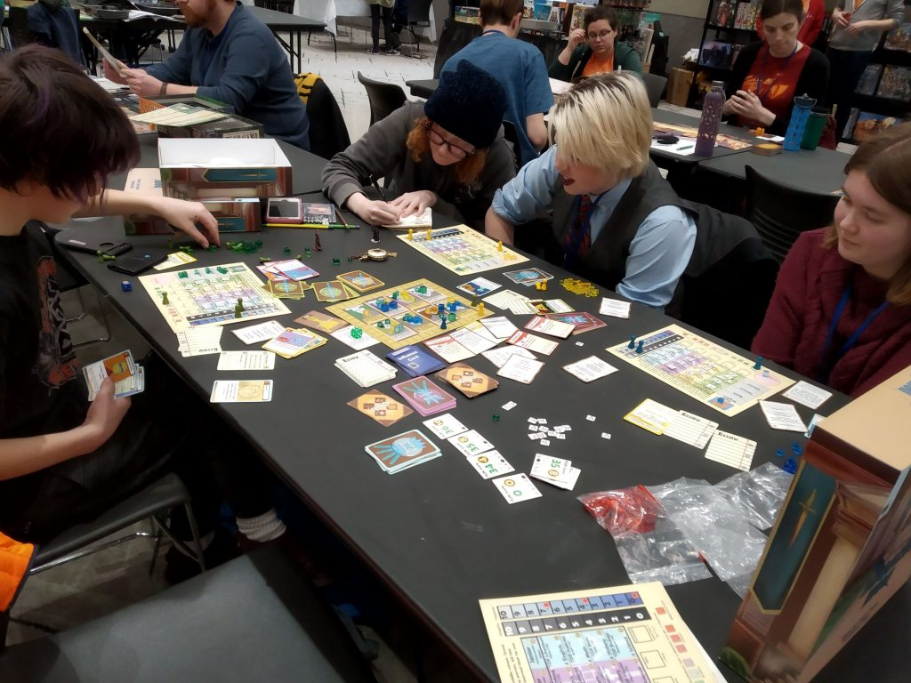
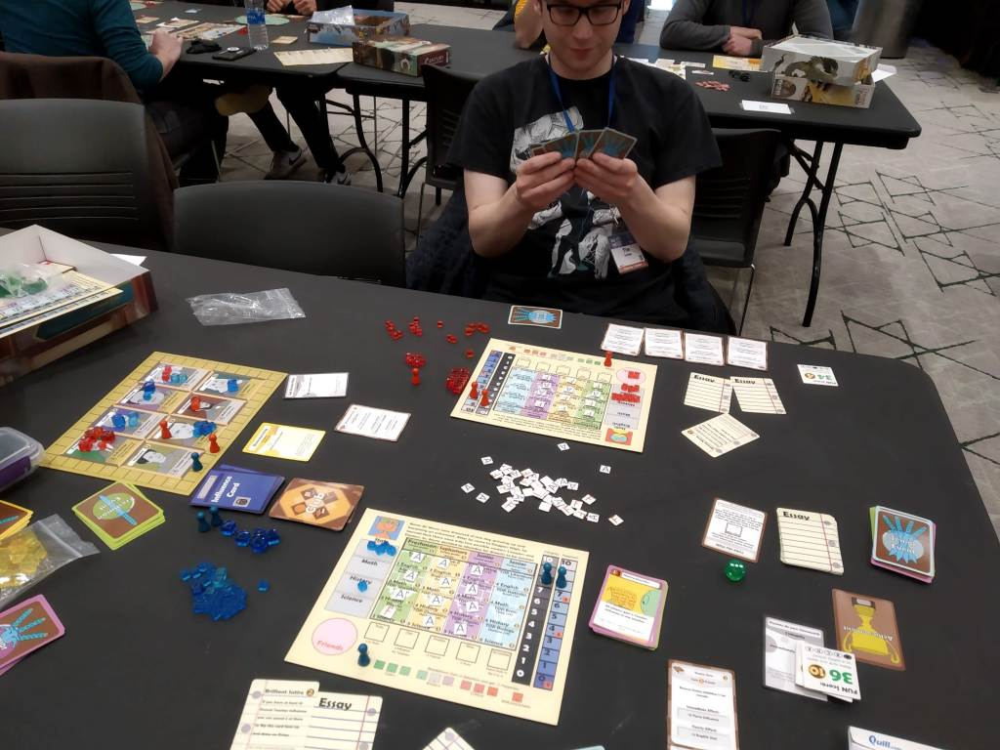

Personal website
February 1, 2019
Hey everyone! This past weekend I was at the Polar Vortex (the gaming convention, not the weather [although it was quite cold]). I was there mostly to demo Daggers High. I was worried that I would encounter the doomsday scenario of no-one wanting to play my game, and was extremely surprised and glad that this was not the case!
So, what is the Polar Vortex gaming convention exactly? Lasting from Friday to Sunday, Polar Vortex is really just a bunch of smaller events all in the same place. From a Settlers of Catan tournament to a
Running these events were a lot of people like me- they had designed a game and wanted to demo it for people. Or maybe they wanted to run a tournament or another interesting event. A lot of the judges (anyone who was running an event) were local gaming stores promoting some of their products. Whatever the case, it was extremely easy to create an event. To sweeten the pot, Polar Vortex waived my ticket fee for hosting events. However, with free tickets comes responsibility, and I had to forgo several events and games that seemed awesome to run my own. Overall though, I had a really good time and a great experience!
FRIDAY:
I registered two events for Friday: a 1 pm event and a 6 pm event. Nobody had signed up for either of these events online, and after getting settled in and waiting awkwardly for what seemed like forever, I decided to get proactive with my recruitment. This was pretty daunting at first, but I quickly realized that there were a lot of people who were just looking for things to do anyway. I have a pretty good opening line for this, which is just to approach someone and say, “hey, would you be interested in playing a game?” This one had about a 60% success rate over the weekend, so I’d highly recommend it.
I met a Jan (pronounced Van?) and another person named Jorge (same pronunciation too!). If you are reading this blog by some chance, thanks for playing my game! Unfortunately, I didn’t get a picture of either of them, but they were both generally pretty positive about the game.
As soon as Jorge and I finished our game, Charles and Katy approached me as they were also interested in trying out the game. “This is great!” I thought at the time, as people were starting to get interested in Daggers High. I had them play against each other and sat out of the game.
Anyway, by the time we finished the game I realized the mistake I had made: I had assumed that someone would be selling food. Unfortunately, this was definitely not the case, and I was pretty much starving. That’s when GrubHub saved the day (by that, I mean my order showed up on time and at the correct location). While waiting for my order, I decided to learn and play Agricola with someone. This was a terrible idea on two levels: first, I was too hungry to learn a game as complex as Agricola, and second, I hadn’t realized that some people had just signed up for my event. They found me and politely reminded me that I was supposed to be running an event, which was kind of embarrassing.
After playing a game of Daggers High, they invited me to play a game called Holding on: The Troubled Life of Billy Kerr. It was a really neat co-op game, but we must have been playing pretty poorly because Billy almost died, and ended up getting transferred to a different hospital after we failed to complete our objective on time.
SATURDAY:
Today, I really wanted to try out a game called Keyforge. Basically, it’s like Yu-Gi-Oh! or Magic the Gathering, except instead of buying booster packs you buy ~40 card decks. Also, every deck is completely unique and you can’t mix-and-match them. It’s a really cool concept, and I knew that I needed to try it as someone who loves collectible card games.
Anyway, the first person to play today was training to be a high school English teacher, so that was really cool. I forgot to tell her that you could only get a max of 2 recs, which normally would not be a problem because you don’t have enough sliders anyway. However, I realized that she was using the green pieces a little bit too late when she started getting her third and fourth Rec (the green bag has 6 extra sliders because of the Teacher’s Pet). I definitely shouldn’t have done this, but I just rolled with it so Anna ended up getting 4 Recs. Whoops. Though it was kind of interesting to see the effect on the game that had, and it ended up being pretty balanced due to the fact that they are competitive. I’ve been thinking this for a while now, and I might end up removing the 2 Rec cap because of how well it has been working with the Teacher’s Pet special character. On the other hand, that would mean that I would have to include 6 more sliders for every player, which can get pretty expensive… perhaps I can just give each player 2 additional sliders (enough for 4
Next, I played against Dan. While he enjoyed the game, he said that from a marketing standpoint it would be a good idea to cut out elements of the game like Integrity and the FUN. I see his point, because the game is definitely on the complex side. On the other hand, Daggers High is one of those games where the theme is really important. It did get me thinking though about how many people see the game and all the different things, and are scared away from it.
Next, dads go 2-0 against their daughters as Steve beats Kate. This was kind of interesting since I’ve been saying for a while now that teens are generally more skilled than adults at playing Daggers High. Maybe this only applies to students who have graduated high school?
Anyway, now it was time for some Keyforge. I bought a deck for $11 for the new player event, and really enjoyed my time. As far as I could tell, the games felt really balanced, and I am really glad that I had the chance to try it out. Will I ever get really into Keyforge? I’m not so sure. The biggest plus is that it is really affordable for a card game. However, I really hated drawing into cards that were literally trash. I felt this intense urge to re-build my deck, but that’s the thing: you can’t. I’m realizing now that part of why I really like games like Yu-Gi-Oh are because you can be really creative and build a deck that suits your playstyle. In Keyforge, you are stuck with what you get. I absolutely love the concept though, and I would be very interested in playing in a tournament every so often.
After Keyforge I got a chance to play The Mind, which reminded me of a slightly more advanced version of this drama game where everyone closes their eyes and as a group tries to count to 100 (or higher). It was alright, but I think that some of the magic was faded for me because of the counting game. I also tried out the mini escape room and got a time of 17 minutes- my favorite number.
SUNDAY:
Sunday Morning I played Quacks of Quedlinburg. It was a really cool game, but I ended up disliking all the luck. The basic idea is very similar to Blackjack, a game where you want to get as close to 21 as possible without going over. In this game, you wanted to draw as many chips as possible without reaching 7 explosion points. To be fair, it was kind of unbalanced because we forgot a critical rule where you can’t buy more than 1 chip from each color during the purchase phase. Unfortunately, I still feel like I wouldn’t enjoy the game that much even if we played correctly.
I spent a while looking for players, but luckily these high school students were interested in playing the game. It was pretty neat to see them be interested in and enjoy the game, since I’ve always been wondering if teens would be interested in playing the game if they weren’t my friends, and I wasn’t there to coerce them. I forgot to write down their names, so I don’t know if they are correct (sorry!).
Right after this game, I played a game against Jeff. You may have noticed based on the pictures, but I lost most of my games against other players. This might be unethical, but at some point I decided to make it my goal to get as close to winning without actually winning – thus, ensuring my opponent would feel like they had a close game but pulled ahead right at the end. After all, part of the reason I am demoing the game is to get people to want to play again- which isn’t going to happen if the designer goes ahead and ruthlessly snubs them. In
Anyway, I made sure to lose in my next game against Tim, and my mistakes were rectified.
Throughout the convention, there was
While waiting for the results to be announced, I played a quick game called Capital Lux with Tia and Duke. I really enjoyed it as a quick game and was seriously thinking of getting a copy. It’s a simple drafting game but there’s a lot of strategy since you can play cards in front of you for points or on the capitals for special abilities. Cards in front of you get scored if you have the highest amount that isn’t over the amounts in the capital. It is really quick, but from my first
Anyway, to end the day the three of us played a game of Daggers High. It was really cool to hear from Duke that while he initially thought that the “take that” in the game would suck, he realized that it was mostly mitigable and not overly strong. It was especially great to hear this after the past few weeks where I have started to try and get reviewers to review my game. I plan to go more into depth in another blog post, but what I didn’t realize was just how hated “take that” is by board game reviewers. It got Daggers High rejected by Rahdo, a very popular and influential
Anyway, I had a really fantastic time at Polar Vortex 2019. I would recommend anyone who enjoys board games to give it a try, as while I mostly played Daggers High, there were hundreds of other events or games to choose from. Ironically, the only downside to Polar Vortex is the crappy weather!
Am I unethical to purposely lose? What do you think of “Take That” mechanics? Want to know where I got my buisiness cards (Office Depot)? Let me know in the comments below! Thanks for reading, as always!